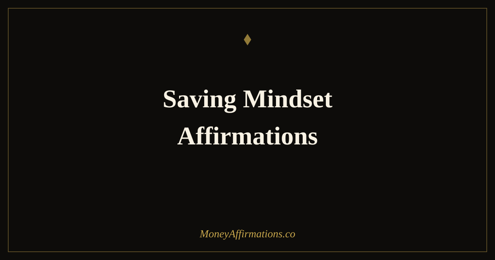

Saving Mindset: 50 Affirmations to Build Lasting Financial Security

Most people approach saving the wrong way. They treat it as what is left over after spending — a remainder rather than a priority. The result is that there is never quite enough left over, month after month. A saving mindset flips this equation entirely. It is not about willpower or deprivation; it is about identity. When you genuinely see yourself as someone who saves, the decisions that support saving start to feel natural rather than forced. These 50 affirmations are organized into five stages of the saving journey — from the very first steps to the long-horizon perspective of a true wealth builder. Use them in sequence if you are just starting out, or jump to the group that matches where you are right now. Each one is designed to rewire not just how you think about money, but how you see yourself in relation to it.
What are saving mindset affirmations?
Saving mindset affirmations are present-tense, first-person statements that reinforce your identity as a financially disciplined person. Unlike general money affirmations that focus on attracting wealth, saving mindset affirmations target the specific beliefs and emotional patterns that make consistent saving difficult — the sense that you will "start next month," that small amounts do not matter, or that saving means missing out on life today.
They work by giving your brain a new reference point for self-concept. When you repeat "I am someone who pays myself first," you are not describing current behavior — you are installing a belief that will gradually shape future behavior. Research on self-affirmation theory shows that affirming core values and identities makes people more open to changing habits that conflict with those values. In short: you act like who you believe you are.
50 saving mindset affirmations
Starting your savings journey
- I am beginning my savings journey today, exactly as I am.
- I am worthy of financial security no matter how small my first step is.
- I am proving to myself that I can save money, one decision at a time.
- I am creating a foundation of financial safety that will grow over time.
- I am someone who values future security as much as present pleasure.
- I am making progress every time I choose to save, even a little.
- I am building a habit that will protect and support me for years to come.
- I am grateful for every dollar I set aside, because it is working for my future.
- I am taking control of my financial life starting right now.
- I am a person who saves money, and that identity grows stronger every day.
Building the consistency habit
- I am consistent in my saving practice because small amounts compound into large results.
- I am showing up for my future self every time I add to my savings.
- I am making saving a non-negotiable part of how I manage my money.
- I am building momentum that gets easier and more natural with every month.
- I am the kind of person who saves before I spend, not after.
- I am proud of my discipline because it is laying the groundwork for real freedom.
- I am patient with the process, knowing that consistency always beats intensity.
- I am reinforcing my saving habit every time I follow through on my commitment.
- I am creating a routine around saving that feels as normal as brushing my teeth.
- I am proof that small, regular contributions add up to something significant.
Overcoming the urge to spend
- I am aware of impulse spending and I choose my future goals over temporary wants.
- I am grateful I can pause before purchasing because that pause protects my savings.
- I am comfortable delaying gratification because I know what I am building toward.
- I am in control of my spending decisions — they do not control me.
- I am someone who asks "is this worth more than my financial security?" before I spend.
- I am finding genuine satisfaction in watching my savings grow instead of watching my balance shrink.
- I am letting go of the belief that I need to spend to feel good or rewarded.
- I am rewarding myself with financial peace rather than short-lived purchases.
- I am learning that the best feeling is knowing I have a cushion behind me.
- I am stronger than any marketing message or sale that tries to pull me off course.
Growing what you have
- I am watching my savings grow and that growth motivates me to save more.
- I am open to learning how to make my money work harder through interest and investing.
- I am building wealth in every account I contribute to, including savings.
- I am excited by compound interest because it means my money multiplies over time.
- I am actively seeking ways to increase what I save each month.
- I am turning my savings account into a launchpad for greater financial opportunities.
- I am proud to have a growing emergency fund that protects everything I have built.
- I am investing in my own financial security as seriously as any other priority in my life.
- I am someone who understands that liquid savings and invested savings both build real wealth.
- I am experiencing the quiet confidence that comes from knowing money is accumulating behind the scenes.
Thinking like a long-term wealth builder
- I am thinking in decades, not just months, when it comes to my financial health.
- I am building a legacy that reflects my values around security, freedom, and generosity.
- I am someone whose saving habits will create options future-me will be grateful for.
- I am a long-term thinker and that perspective is my greatest financial advantage.
- I am free from the trap of living paycheck to paycheck because I plan and save ahead.
- I am passing down a positive relationship with money to everyone in my life.
- I am building generational financial stability, one saved dollar at a time.
- I am secure in the knowledge that my saving habits compound quietly into extraordinary wealth.
- I am the architect of my financial future and I build it with intention every day.
- I am a wealth builder, and saving is the foundation everything else rests on.
How to use these affirmations
The most effective way to use saving mindset affirmations is to tie them to a specific financial action. Read the "Starting your savings journey" group on the same day you open or review your savings account. Read the "Overcoming the urge to spend" group when you know a tempting situation is coming — a sale, a social event, an online browsing session. This contextual pairing embeds the affirmation at the exact moment of decision, which is when it does the most work.
For daily practice, choose three to five affirmations that feel slightly uncomfortable — those are the beliefs your brain is still resisting, and resistance is where the real rewiring happens. Read them aloud in the morning, preferably right after any financial action like a transfer or a bill payment. The goal is to create an association between the action and the identity statement.
If you are working on overhauling your full approach to money, pairing these affirmations with a structured system like budgeting affirmations for financial control gives you both the mindset layer and the practical framework at the same time. Mindset without structure can stall; structure without mindset tends to collapse under pressure. Together, they reinforce each other.
Write your three chosen affirmations in a notebook, on a sticky note on your bathroom mirror, or as a phone lock-screen reminder. Repetition in multiple formats — spoken, written, seen — accelerates the rewiring process significantly.
The psychology of saving: why your brain fights it (and how affirmations help)
There is a well-documented cognitive bias called present bias — the brain's tendency to discount future rewards in favour of immediate ones. In a landmark study by economists Laibson and Thaler, participants consistently chose a smaller reward now over a significantly larger reward later, even when the larger reward was objectively more valuable. This is not a character flaw; it is how the human brain evolved, optimised for immediate survival rather than future planning.
At the neurological level, saving involves a tug of war between two systems. The prefrontal cortex — responsible for planning, delayed gratification, and long-term thinking — knows that saving is wise. The limbic system, which governs emotion and reward, wants the dopamine hit of spending now. Most of the time, when the two conflict without a strong identity anchor, the limbic system wins.
This is where identity-based habits, as described by James Clear in his research on behavioural change, become crucial. Clear identifies a fundamental difference between goal-based thinking ("I want to save $10,000") and identity-based thinking ("I am a saver"). Goal-based systems fail because once the goal is met — or seems too distant — the motivation evaporates. Identity-based systems are self-reinforcing: every time you act like a saver, you add evidence to the belief that you are a saver, which makes future saving more likely.
Affirmations that begin with "I am a saver" or "I am someone who pays myself first" are doing exactly this work. They are not wishful thinking — they are deliberate, repeated identity statements that over time reshape how your prefrontal cortex frames every financial decision. The research on self-affirmation (Steele, 1988; Cohen and Sherman, 2014) shows that affirming your values and identity reduces the psychological threat response that typically makes people avoid thinking about their finances. When saving feels like part of who you are rather than a punishment you impose on yourself, the brain stops fighting it.
Tips to make them work faster
- Automate first: Set up an automatic savings transfer for the same day as your paycheck, even if it is small. Affirmations prime the mindset; automation removes the decision entirely so the brain cannot argue.
- Say them during action: Read your chosen affirmations while you are actually looking at your savings balance or making a transfer. The emotional context of the real action makes the affirmation stick faster.
- Track your streak: Mark a calendar every day you read your affirmations. The visual streak creates its own motivation loop and reinforces your saver identity with a daily visual cue.
- Upgrade the discomfort: If an affirmation feels obviously true, it is no longer doing its job. Move to affirmations that feel slightly out of reach — those are the ones actively challenging a limiting belief.
- Review your savings balance weekly: Pair your affirmation practice with a weekly savings check-in. Watching the number grow — even slowly — provides neurological confirmation that the affirmations are being backed up by real-world evidence, which accelerates belief change.
Frequently asked questions
How do I develop a saving mindset if I have no money left at the end of the month?
Start with the identity, not the amount. Even saving one dollar is proof that you are a saver. The mindset shift has to come before the money does — once you genuinely see yourself as someone who saves, you will find small ways to create room. Try automating a tiny transfer on payday, before spending, so saving happens first rather than last. The psychological impact of consistent saving at any amount is dramatically greater than occasional saving of larger sums.
How long does it take for a saving mindset to feel natural?
Research on habit formation suggests 21 to 66 days of consistent repetition for a new behavior to feel automatic, with the median around 66 days. For affirmations specifically, most people notice a shift in how they talk about money within two to three weeks of daily practice. The identity change — feeling like a saver rather than someone trying to save — tends to click between weeks four and eight. Pairing affirmations with actual saving behavior accelerates the timeline.
Can affirmations really change spending habits?
Yes, with an important caveat: affirmations work by shifting your self-concept, which then influences behavior — they do not directly override impulses in the moment. Studies on self-affirmation theory (Cohen and Sherman, 2014) show that affirming your values and identity reduces defensive, avoidant responses to financial information. When you see yourself as a financially secure person, spending decisions that contradict that identity become uncomfortable rather than automatic. The more consistently you practice, the stronger that dissonance becomes — and the more naturally your behavior aligns with your affirmed identity.
A saving mindset is the bedrock that every other financial goal rests on. Whether you are building an emergency fund, saving for a house, or working toward early financial independence, the beliefs in this post give you the inner architecture to make it real. For a deeper exploration of the wealth-building principles that complement a strong saving practice, visit the wealth affirmations collection.